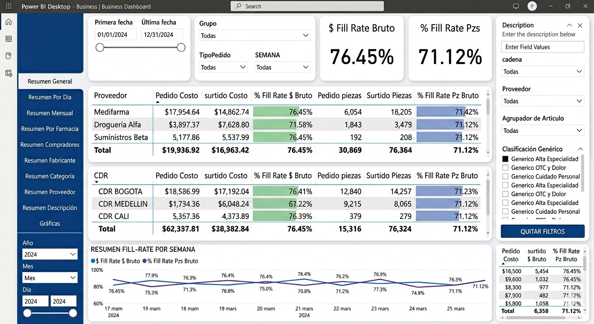

Dashboard de Nivel de Servicio y Fill Rate en Retail. Desarrollo de un dashboard interactivo de Business Intelligence orientado al análisis del Nivel de Servicio (NS) y Fill Rate en una cadena de retail/farmacias. La solución integra información operativa y comercial para monitorear el desempeño de sucursales, proveedores y centros de distribución, permitiendo identificar oportunidades de mejora en el abastecimiento y reducir la pérdida de ventas por falta de inventario.
Aviso de confidencialidad: Los datos utilizados en este dashboard son ficticios y han sido modificados con fines de demostración. No corresponden a información real y se presentan de esta manera para proteger la confidencialidad de la organización.

Principales KPIs e indicadores monitoreados
- Nivel de Servicio (NS) por sucursal, evaluando la capacidad de satisfacer la demanda del cliente.
- Nivel de Servicio con clientes negados, identificando las sucursales donde no fue posible concretar la venta por falta de producto.
- Fill Rate bruto en piezas y valor monetario ($), comparando pedidos contra surtidos reales.
- Fill Rate (%) por proveedor y por CEDIS/CDR, permitiendo evaluar el desempeño de la cadena de suministro.
- Análisis semanal e histórico para monitorear tendencias y desviaciones operativas.
- Análisis por grupopara identificar ventas y comparar grupos
Resumen Ejecutivo Diario
- Top productos más vendidos y productos con mayor impacto en el nivel de servicio.
- Nivel de servicio por farmacia, permitiendo comparar el desempeño entre sucursales.
- Farmacias con mayor número de clientes negados, facilitando la identificación de problemas de inventario.
- Indicadores de ventas diarias, relacionando el desempeño comercial con la disponibilidad de productos.
Fórmulas e Indicadores Utilizados
Para evaluar la eficiencia operativa y el nivel de abastecimiento, el dashboard implementa métricas estándar de la industria retail que permiten medir el cumplimiento de pedidos, la disponibilidad de inventario y la capacidad de respuesta de la cadena de suministro. Estos indicadores fueron diseñados para proporcionar una visión integral del desempeño de proveedores, CEDIS y sucursales, apoyando la toma de decisiones estratégicas.
Fill Rate Bruto (%)
Fill Rate (%) = (Surtido / Pedido) × 100Explicación: Este indicador representa el porcentaje de productos surtidos correctamente respecto al total solicitado. Un valor cercano al 100% indica un alto nivel de cumplimiento y una adecuada disponibilidad de inventario. Cuando este porcentaje disminuye, significa que existen faltantes en el proceso de abastecimiento, impactando directamente la operación de las sucursales y la satisfacción del cliente.
Fill Rate Bruto en Piezas
Fill Rate PZ (%) = (Piezas Surtidas / Piezas Pedidas) × 100Explicación: Permite medir el porcentaje de unidades físicas entregadas respecto a las solicitadas. Por ejemplo, un Fill Rate del 95% significa que de cada 100 piezas pedidas, 95 fueron surtidas y 5 quedaron pendientes. Este indicador es fundamental para identificar faltantes y evaluar el desempeño por sucursal, proveedor o centro de distribución (CEDIS/CDR), permitiendo detectar áreas críticas de abastecimiento.
Fill Rate Bruto en Valor Monetario ($)
Fill Rate $ (%) = (Costo Surtido / Costo Pedido) × 100Explicación: Evalúa el cumplimiento de los pedidos desde una perspectiva financiera, comparando el valor monetario de la mercancía surtida contra el valor total solicitado. Este KPI permite cuantificar el impacto económico de los faltantes, ya que no todos los productos tienen el mismo valor comercial. Una disminución en este porcentaje puede representar pérdidas relevantes en ventas y rentabilidad.
Nivel de Servicio (NS)
NS (%) = (Clientes Atendidos / Clientes Totales) × 100Explicación: El Nivel de Servicio mide la capacidad de las sucursales para satisfacer la demanda de los clientes. Un NS del 98% indica que 98 de cada 100 clientes encontraron disponibles los productos requeridos. Este indicador es uno de los principales referentes de desempeño en retail, ya que refleja directamente la calidad del servicio y la eficiencia de la cadena de suministro. Una reducción en este valor suele estar asociada con quiebres de inventario o retrasos en el surtido.
Porcentaje de Clientes Negados
Clientes Negados (%) = (Clientes Negados / Clientes Totales) × 100Explicación: Este indicador representa el porcentaje de clientes que no pudieron concretar su compra debido a la falta de disponibilidad de uno o varios productos. Un incremento en este porcentaje es una señal de alerta, ya que implica pérdida potencial de ventas y una disminución en la satisfacción del cliente. El análisis por sucursal permite identificar las farmacias con mayor incidencia y priorizar acciones correctivas.
Interpretación de los Indicadores
El análisis conjunto de estos porcentajes permite evaluar el desempeño de toda la operación logística y comercial. Un Fill Rate elevado generalmente se traduce en un Nivel de Servicio alto y en una reducción del porcentaje de Clientes Negados. De igual manera, la comparación de estos indicadores entre proveedores, CEDIS y sucursales facilita la identificación de cuellos de botella, problemas de abastecimiento y oportunidades de optimización en la distribución de mercancías.
Adicionalmente, el dashboard incorpora un Resumen Ejecutivo Diario y un análisis semanal, permitiendo monitorear la evolución de los principales indicadores a lo largo del tiempo. Entre los módulos de análisis destacan:
- Top productos más vendidos, identificando los artículos con mayor demanda.
- Nivel de Servicio por farmacia, facilitando la comparación del desempeño entre sucursales.
- Farmacias con mayor número de clientes negados, permitiendo detectar problemas de inventario de manera temprana.
- Ventas diarias y evolución semanal, relacionando el comportamiento comercial con la disponibilidad de productos.
- Análisis de Fill Rate por proveedor y CEDIS/CDR, evaluando el cumplimiento y eficiencia de cada eslabón de la cadena de suministro.
Objetivo del Dashboard
Centralizar la información operativa y comercial en una única plataforma analítica, proporcionando visualizaciones y KPIs que apoyen la toma de decisiones estratégicas relacionadas con inventarios, abastecimiento, desempeño de proveedores y optimización del nivel de servicio al cliente. El dashboard facilita la identificación de áreas de oportunidad mediante el análisis de indicadores diarios, semanales y por sucursal, fortaleciendo la eficiencia de la cadena de suministro y contribuyendo a mejorar la experiencia del cliente final.